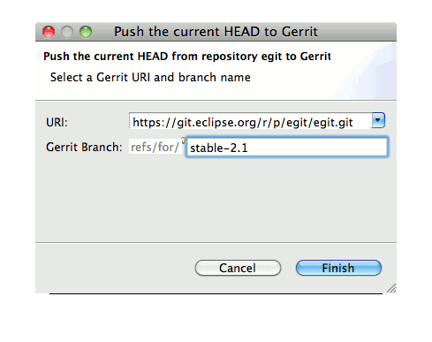
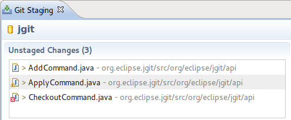
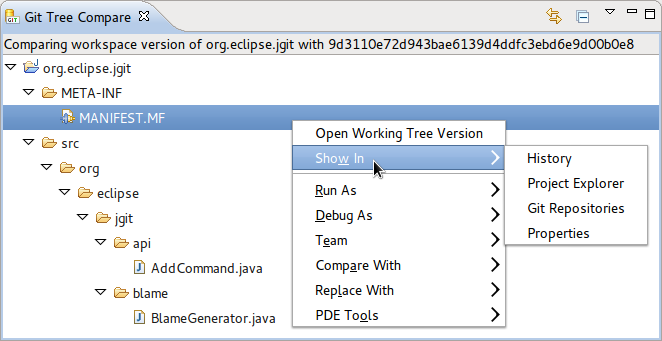
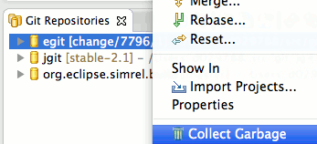
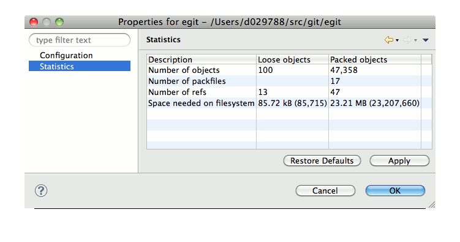

| EGit 2.1 New and Noteworthy |
|
|

|
|
|
Bugs Closed |
Note that 2.1 is not yet released, please install from the
Nightly Update Site to use these features.
EGit Features
"Push to Gerrit..." action
- Click "Push to Gerrit..." on repository nodes in the Repositories View or "Team > Remote > Push to Gerrit..." in the team menu in order to push changes to Gerrit for code review, this way you now can specify the branch you are targeting on the fly.

Delete untracked files in Staging View and Repositories View
The Staging View now has a context menu action
Delete which makes it possible to delete untracked files directly from the view. The Repositories View has the same action.
When all the selected files are workspace resources, it's possible to undo the delete using the "Edit > Undo" menu.
Before, it was always necessary to locate the file in the Package Explorer or Navigator. In the case of non-workspace resources, it was necessary to leave Eclipse.
Commit using Ctrl+Enter (Cmd+Enter) in Staging View and Commit Dialog
After having entered the commit message, it's now possible to commit using the "Ctrl+Enter" (or "Cmd+Enter" on Mac OS X) shortcut instead of clicking on the toolbar icon.
Show warnings/errors on files in Staging View and Commit Dialog
When there is a problem on a file, it was previously only possible to see this in the Package Explorer or Navigator. Now the decorations are also shown when preparing a commit, in the Commit Dialog and in the Staging View:

The Git Tree Compare view now has a context menu, with
Open Working Tree Version and a
Show In menu:

It now also acts as a selection provider, so that other views (e.g. History view) can track the selection of the Tree Compare view.
Improved conflict markers for rebase/cherry-pick conflicts
Instead of OURS/THEIRS, the conflict markers now show more useful information. For example, a conflicting cherry-pick:
<<<<<<< master
a
=======
b
>>>>>>> bad1dea Message of the commit I'm cherry-picking
A conflict during rebase:
<<<<<<< Upstream, based on master
a
=======
b
>>>>>>> b161dea Message of a commit I'm rebasing
Garbage Collector and Repository Storage Statistics
- Click "Collect Garbage..." on repository nodes in the Repositories View to run JGit's new gc implementation.
Caution: We did a lot of tests but gc is a complex algorithm so there still might be some problems in corner cases so be cautious and don't use it on your most precious repositories without a backup. If in doubt run native git's
git fsck in order to check consistency.

- Click "Properties" on a repository node in the Repositores View to access a new property page displaying repository storage statistics

Branch Tracking Status Decoration for Tracking of Local Branches
EGit does now decorate local branches tracking another local
branch with the number of commits the checked out local branch differs from
the other local branch it's tracking.
Improved autocrlf Support
- EGit now expands LF to CRLF in input for compare editors if autocrlf = true
One-click Commit and Push
- The Commit Dialog now supports "commit" and "push to upstream" in one step
Synchronize View
- Now synchronization configuration is persisted between eclipse sessions.
- Users can also "pin" configured synchronization.
- Performance of decorations in Synchronize View was improved
- "Create Patch..." command was added to the context menu of the Synchronize View
Other Improvements
- MultiPullResultDialog supports multi-selection. The details button in MultiPullResultDialog can now also work with multi-selections.
- Staging View prompts if there are unsaved files on commit
- Merge does now support option --squash (see
git-merge)
- "Show In > Git Repositories" in Repositories View supports multi-selection
|
|
|
|
|
Bugs Closed |